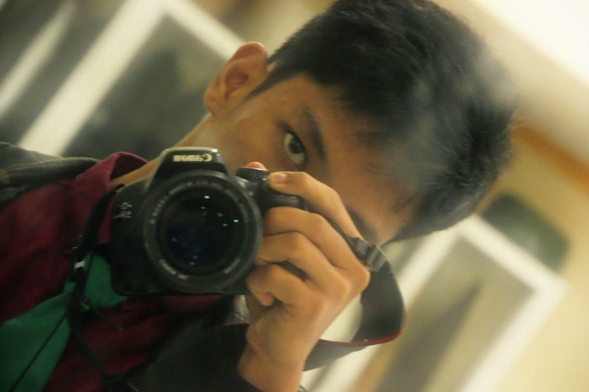
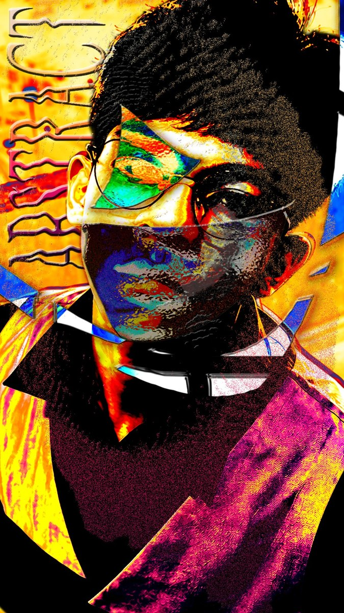
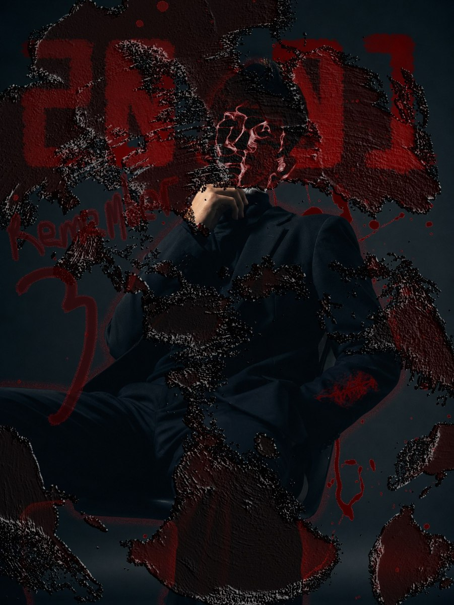

Brand & Logo Design
Visual Identity — JO ZGRF
Designing the mark I work under: a logogram built from initials, paired with a muted, cinematic palette.
Visual Designer & Photographer — Indonesia
Frames, forms & fragments — visual work that stays exploratory, reads editorial, and never forgets to feel like something personal.
01About
JO ZGRF is a visual practice built across photography and graphic design — a body of work that stays exploratory by nature, editorial in the eye, and cinematic in mood. Every frame, layout and type experiment is made personal on purpose.
It's less about chasing one signature style, more about a consistent standard of craft applied to many — portraits, self-directed shoots, identity systems and the occasional glitch of digital collage.
Designing the mark I work under: a logogram built from initials, paired with a muted, cinematic palette.

The other side of the frame. Documenting the process is part of the work, not just the result.

Colour, texture and glitch layered until the portrait breaks into something else entirely.

A quieter, darker study — mood built from texture and restraint rather than colour.
03What I Do
Portrait, editorial & street photography with a cinematic eye for light, mood and quiet detail.
Visual identity, layout systems and experimental typography for brands and personal projects.
Concepting the full visual language of a project — mood, palette, composition — before a single frame is shot.
Ongoing self-portraiture and digital collage — the sketchbook side of the practice, made public.